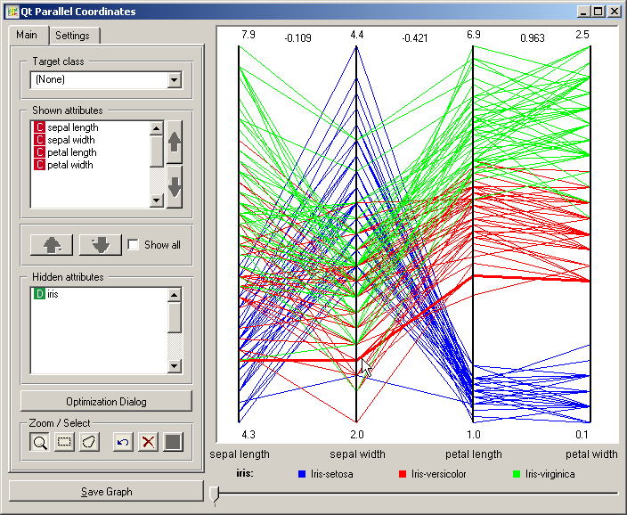
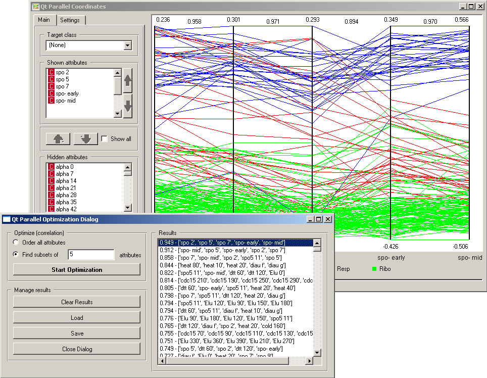
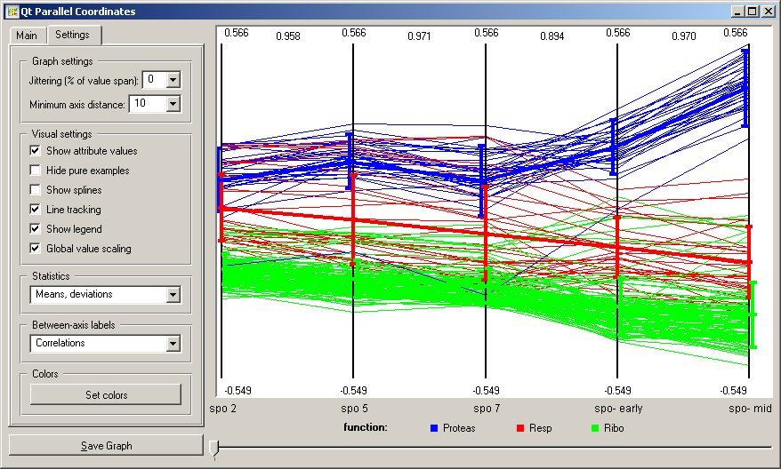

This is documentation for Orange 2.7. For the latest documentation, see Orange 3.
Parallel Coordinates¶

Parallel Coordinates visualization with some explorative data analysis and intelligent data visualization enhancements.
Signals¶
- Inputs:
- Examples (ExampleTable)
Input data set.
- Example Subset (ExampleTable)
A subset of data instances from Examples.
- Attribute Selection List
List of attributes to be shown in the visualization.
- Outputs:
- Selected Examples (ExampleTable)
A subset of examples that user has manually selected from the scatterplot.
- Unselected Examples (ExampleTable)
All other examples (examples not included in the user’s selection).
- Attribute Selection List
List of attributes used in the visualization.
Description¶
Parallel Coordinates is a multidimensional data visualization technique. Each attribute is represented in a vertical line, where the maximum and minimum values of that dimension are scaled to the upper and lower points on these vertical lines. For N visualized attributes, N-1 lines connected to each vertical line at the appropriate dimensional value represent an N-dimensional point. The snapshot shown below displays data from the Iris data set, with the data instance closest to the cursor being highlighted. In Iris data set, the instances are labeled with one of the three distinct classes, depicted with colored lines in the visualization (red, green, blue).
The Main tab allows the user to choose the subset of attributes to be displayed in the visualization. In case of a class-labeled data set, only one class (vs. the others) may be exposed by selecting it from Target class. Especially with data sets that include many attributes, Optimization Dialog may help to find interesting projections. Currently, this is decided based on a correlation between neighboring attributes in the visualization, where the target s to find visualizations with the highest sum of the absolute value of correlations between neighboring attributes. Snapshot below shows such a visualization which uses five attributes and plots the data set from functional genomics (brown-selected.tab).
The Settings tab is used to control several aspects on visualization. Jittering may be useful when the data includes instances which share many of the attribute values. The graph can be annotated by displaying minimal (bottom) and maximal (top) values of the attributes (Show attribute values). For polygon of each of the data instances can be converted to a spline (Show splines). Global value scaling would make the scale for each of the attributes equal by finding the extreme values across the attributes in the display. That could be useful in a number of applications, such as, for instance, those from functional genomics (the snapshot shown below). Line tracking can highlight the polygon of an instance closest to the mouse pointer (see the topmost snapshot on this page). The option Hide pure examples would draw the data instance polygons from left to right, stopping at the attribute where at a distinct point all the instances would belong to a single class. The setting in Statistics box toggles the drawing of an average or median trajectory. Information on correlation between the neighboring attributes may also be displayed (Between-axis labels).
